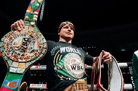
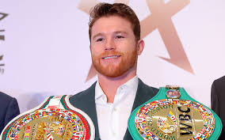
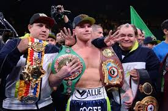
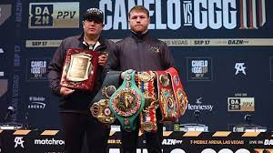

Campeão Peso Médio
Conquistou este cinturão em 2015, defendendo-o com sucesso em várias lutas.

Campeão Super Médio
Em 2018, unificou todos os títulos da categoria super-médio, um feito histórico.

Campeão Meio-Pesado
Ganhou o cinturão meio-pesado em 2021, mostrando versatilidade em várias categorias.

Quantos Cinturões ?
Canelo Álvarez já ganhou 11 cinturões mundiais, incluindo WBA, WBC, IBF e WBO, em quatro categorias diferentes.